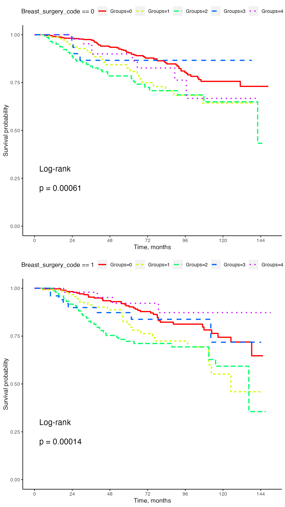

Introduction to the survcomp2 Package
Jian He
Source:vignettes/survcomp2_Vignette.Rmd
survcomp2_Vignette.RmdImport the data
path <- system.file("extdata", "bcsurg.csv", package = "survcomp2")
dat <- read.csv(path)Introduction to the data
- The dataset consist of 1598 observations and 31 variables.
- The data were extracted from the hospital electronic health records and cancer registry.
- The data contain patients’ demographic and clinical characteristics and treatment information.
- The main variable of interest is
Groups, which encompasses 5 subgroups of breast cancer patients; they are: Luminal A (0), Luminal B (1), Triple Negative (2), Her2 Enriched (3), and Triple Positive (4). - Another variable of interest is
Breast_surgery_codeand it has two levels: segmental mastectomy (0) and simple mastectomy (1). - For easier model interpretation, note that the codes in the parentheses correspond to the levels showed in the analysis outputs below, which is different from the coding used in the data.
str(dat)
#> 'data.frame': 1598 obs. of 31 variables:
#> $ ID.. : int 1 3 4 5 6 7 8 9 10 12 ...
#> $ pts_sex : int 1 1 1 1 1 1 1 1 1 1 ...
#> $ race : int 1 1 1 0 0 0 1 1 1 1 ...
#> $ ethnicity : int 1 1 1 1 1 1 1 1 1 1 ...
#> $ AGE_agedx : int 49 63 61 61 37 73 68 59 62 51 ...
#> $ DT_dxdate2 : chr "2010-03-03" "2018-04-25" "2009-09-29" "2017-07-21" ...
#> $ ER : int 0 1 0 0 1 0 1 1 1 1 ...
#> $ PR : int 0 1 0 0 1 0 1 1 1 1 ...
#> $ HER2 : int 1 0 0 1 0 0 1 0 0 0 ...
#> $ Groups : int 4 2 3 4 2 3 5 1 1 2 ...
#> $ DT_rxdatemostdefsurg2 : chr "2011-01-20" "2018-05-14" "2010-04-02" "2017-09-12" ...
#> $ Breast_surgery_code : int 2 1 2 2 2 1 2 2 1 2 ...
#> $ Chemo_code : int 1 2 1 2 2 2 2 3 3 1 ...
#> $ DT_rxdatechemo2 : chr "2010-04-02" "2018-07-11" "2009-11-30" "2018-01-26" ...
#> $ Radiation_code : int 3 2 2 3 2 2 3 3 2 2 ...
#> $ DT_rxdaterad2 : chr NA "2018-10-15" "2010-06-02" NA ...
#> $ DT_rxdateradend2 : chr NA "2018-12-03" "2010-07-12" NA ...
#> $ Endocrine_therapy_code: int 2 1 2 2 1 2 1 1 1 1 ...
#> $ DT_rxdatehorm2 : chr NA "2018-09-27" NA NA ...
#> $ DT_rxdatebrm2 : chr NA NA NA "2017-11-10" ...
#> $ Immunotherapy_code : int 2 2 2 1 1 2 1 2 2 2 ...
#> $ DT_recurdate1st2 : chr "2012-07-10" NA NA NA ...
#> $ DT_dod : chr "2019-07-10" NA NA NA ...
#> $ DT_date_last_seen : chr "2015-09-15" "2019-05-29" "2016-02-29" "2021-11-04" ...
#> $ htn : int 0 1 1 1 0 1 1 0 1 0 ...
#> $ hld : int 0 1 1 1 0 1 1 0 1 0 ...
#> $ myc : int 0 0 0 0 0 0 0 0 0 0 ...
#> $ stroke : int 0 0 0 0 0 0 0 0 0 0 ...
#> $ chf : int 0 0 1 0 0 0 0 0 1 0 ...
#> $ ckd : int 0 0 1 0 0 1 0 0 0 0 ...
#> $ tobacco_hx : int 0 0 1 0 0 0 1 0 0 9 ...Research Questions
- Is overall survival different among subgroups of breast cancer survivors within each level of surgery types, i.e., segmental (0) vs simple mastectomy (1)?
- If so, how does overall survival differ between subgroups of breast cancer survivors within each level of surgery types?
Analysis Plan
We plan to first plot the Kaplan-Meier survival curves stratified by the subgroups of patients within each level of surgery types, and perform global log-rank tests to see if there is at least one subgroup of patients whose overall survival is different from the others. If we have enough evidence to reject the null hypothesis of the global log-rank test; that is, there is no difference in overall survival among subgroups of breast cancer survivors, then we can perform post-hoc pairwise comparisons within each level of surgery types adjusting for multiplicity to find out which pair of subgroups is different.
Analysis Results
Kaplan-Meier Plots
survcomp_plot(dat = dat, patid = "ID..",
f1 = "Groups", f2 = "Breast_surgery_code",
dt_start = "DT_dxdate2",
dt_outcome = "DT_dod",
dt_end = "DT_date_last_seen") We have enough evidence to reject the null hypothesis of the global log-rank test. We shall proceed.
Pairwise Comparisons
emm_contrasts[emm_contrasts$p.value < 0.05, ]
#> contrast Breast_surgery_code ratio SE df asymp.LCL asymp.UCL
#> Groups0 / Groups2 0 0.435 0.0918 Inf 0.245 0.774
#> Groups0 / Groups2 1 0.430 0.0945 Inf 0.236 0.783
#> Groups2 / Groups4 1 4.364 2.2824 Inf 1.048 18.175
#> null z.ratio p.value
#> 1 -3.944 0.0008
#> 1 -3.838 0.0012
#> 1 2.817 0.0390
#>
#> Confidence level used: 0.95
#> Conf-level adjustment: tukey method for comparing a family of 5 estimates
#> Intervals are back-transformed from the log scale
#> P value adjustment: tukey method for comparing a family of 5 estimates
#> Tests are performed on the log scale- For those had undergone segmental mastectomy, there was statistically discernible difference in overall survival between Luminal A and Triple Negative cohorts.
- For those had undergone simple mastectomy, there were statistically discernible differences in overall survival between Luminal A and Triple Negative cohorts, and between Triple Negative and Triple Postive cohorts.
pwcomp_output_df <- data.frame(
contrast = emm_contrasts$contrast,
factor2 = emm_contrasts$Breast_surgery_code,
hazard_ratio = round(emm_contrasts$ratio, 3),
standard_error = round(emm_contrasts$SE, 3),
dof = emm_contrasts$df,
#lower_limit = emm_contrasts$asymp.LCL,
#upper_limit = emm_contrasts$asymp.UCL,
#null_hyp = emm_contrasts$null,
#test_stat = emm_contrasts$z.ratio,
p = round(emm_contrasts$p.value, 3)
)
pwcomp_output_df
#> contrast factor2 hazard_ratio standard_error dof p
#> 1 Groups0 / Groups1 0 0.539 0.126 Inf 0.062
#> 2 Groups0 / Groups2 0 0.435 0.092 Inf 0.001
#> 3 Groups0 / Groups3 0 1.168 0.603 Inf 0.998
#> 4 Groups0 / Groups4 0 0.736 0.276 Inf 0.926
#> 5 Groups1 / Groups2 0 0.807 0.209 Inf 0.922
#> 6 Groups1 / Groups3 0 2.167 1.164 Inf 0.603
#> 7 Groups1 / Groups4 0 1.365 0.552 Inf 0.940
#> 8 Groups2 / Groups3 0 2.685 1.418 Inf 0.333
#> 9 Groups2 / Groups4 0 1.691 0.663 Inf 0.666
#> 10 Groups3 / Groups4 0 0.630 0.386 Inf 0.943
#> 11 Groups0 / Groups1 1 0.541 0.136 Inf 0.105
#> 12 Groups0 / Groups2 1 0.430 0.095 Inf 0.001
#> 13 Groups0 / Groups3 1 0.824 0.319 Inf 0.987
#> 14 Groups0 / Groups4 1 1.877 0.985 Inf 0.751
#> 15 Groups1 / Groups2 1 0.795 0.198 Inf 0.889
#> 16 Groups1 / Groups3 1 1.524 0.616 Inf 0.836
#> 17 Groups1 / Groups4 1 3.471 1.865 Inf 0.140
#> 18 Groups2 / Groups3 1 1.916 0.738 Inf 0.441
#> 19 Groups2 / Groups4 1 4.364 2.282 Inf 0.039
#> 20 Groups3 / Groups4 1 2.278 1.396 Inf 0.664